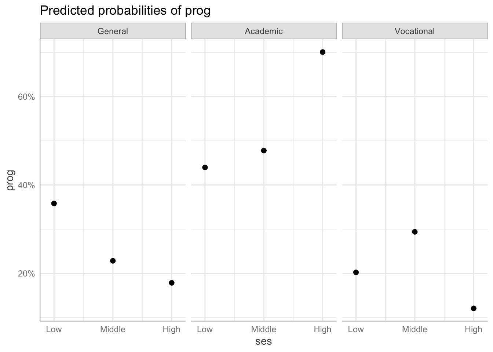

library(tidyverse)
library(janitor)
library(skimr)
library(sjPlot)
library(nnet)
library(broom)
library(marginaleffects)
library(gtsummary)
library(ggeffects)Measuring Marginal Effects on Multiple Outcomes
Set up
This section uses the following packages:
We will use the same data as the previous section:
prog ses write
1 Vocational Low 35
2 General Middle 33
3 Vocational High 39
4 Vocational Low 37
5 Vocational Middle 31
6 General High 36Multinomial logit regression
Interpreting the coefficients
Let’s take another look at the model we created previously:
m1 <- multinom(prog ~ ses + write, data = df)# weights: 15 (8 variable)
initial value 219.722458
iter 10 value 179.985215
final value 179.981726
convergedtbl_regression(m1, intercept = T)| Characteristic | log(OR)1 | 95% CI1 | p-value |
|---|---|---|---|
| Academic | |||
| (Intercept) | -2.9 | -5.1, -0.57 | 0.014 |
| ses | |||
| Low | — | — | |
| Middle | 0.53 | -0.34, 1.4 | 0.2 |
| High | 1.2 | 0.15, 2.2 | 0.024 |
| writing score | 0.06 | 0.02, 0.10 | 0.007 |
| Vocational | |||
| (Intercept) | 2.4 | 0.06, 4.7 | 0.044 |
| ses | |||
| Low | — | — | |
| Middle | 0.82 | -0.14, 1.8 | 0.092 |
| High | 0.18 | -1.1, 1.5 | 0.8 |
| writing score | -0.06 | -0.10, -0.01 | 0.017 |
| 1 OR = Odds Ratio, CI = Confidence Interval | |||
We have three options for interpreting coefficients in multinomial logistic regression.
Relative log odds
Similar to log odds ratios in binary logistic regression, these can be interpreted as the effect of a one-unit change in \(x_i\) on the log odds of being in category 2 compared to being in category 1. For example, increasing yoru writing score by one point is associated with a 0.06 change in the log odds ratio of choosing the academic program compared to the general program.
Relative risk ratios
Similar to odds ratios in binary logistic regression, these can be interpreted as the effect of a one-unit change in \(x_i\) on the probability of being in category 2 compared to being in category 1. For example, increasing yoru writing score by one point is associated with a 1.06 change in the odds ratio of choosing the academic program compared to the general program.
You can get this using broom::tidy():
tidy(m1, exponentiate = T)# A tibble: 8 × 6
y.level term estimate std.error statistic p.value
<chr> <chr> <dbl> <dbl> <dbl> <dbl>
1 Academic (Intercept) 0.0577 1.17 -2.45 0.0145
2 Academic sesMiddle 1.70 0.444 1.20 0.229
3 Academic sesHigh 3.20 0.514 2.26 0.0237
4 Academic write 1.06 0.0214 2.71 0.00682
5 Vocational (Intercept) 10.7 1.17 2.01 0.0439
6 Vocational sesMiddle 2.28 0.490 1.68 0.0925
7 Vocational sesHigh 1.20 0.648 0.278 0.781
8 Vocational write 0.946 0.0233 -2.39 0.0170 Or plot your results using sjPlot::plot_model():
plot_model(m1, show.values = T, value.offset = .3, order.terms = T)Predicted probabilities
This describes the probability that an observation will be in a category for a given a set of observed values. For example, the predicted probability that student with a high socio-economic status and the average writing score of 52.78 will choose an academic program is 70%. The predicted probability that they will choose the general program is 18%. Finally, the predicted probability that they will choose the vocational program is 12%.
broom::augment() does not currently support multinomial regression. Instead, we can use base R’s predict():
predict(m1, newdata = tibble(ses = "High", write = mean(df$write)), type = "probs") General Academic Vocational
0.1784891 0.7008979 0.1206130 We can plot these predicted probabilities across our outcomes and variable options using ggeffects::ggeffect():
ggeffect(m1, terms = "ses") |>
plot()
ggeffect(m1, terms = "write") |>
plot()Marginal effects
We can interpret the marginal effects of a one-unit change in \(x_i\) on the change in probability that an observation will fall into one category. For example, moving from a high to a low socio-economic status decreases the probability that an individual will select the general program by 16%.
You can calculate the marginal effects of each change using marginaleffects::marginaleffects():
marginaleffects(m1, variables = "ses", type = "probs") |>
summary() Group Term Contrast Effect Std. Error z value Pr(>|z|) 2.5 %
1 General ses Middle - Low -0.12447 0.07993 -1.5572 0.119428 -0.28113
2 General ses High - Low -0.16006 0.08689 -1.8420 0.065470 -0.33036
3 Academic ses Middle - Low 0.03577 0.08406 0.4255 0.670469 -0.12899
4 Academic ses High - Low 0.23181 0.09370 2.4738 0.013368 0.04815
5 Vocational ses Middle - Low 0.08870 0.06982 1.2703 0.203962 -0.04815
6 Vocational ses High - Low -0.07175 0.07433 -0.9652 0.334425 -0.21743
97.5 %
1 0.03219
2 0.01025
3 0.20053
4 0.41546
5 0.22555
6 0.07394
Model type: multinom
Prediction type: probs